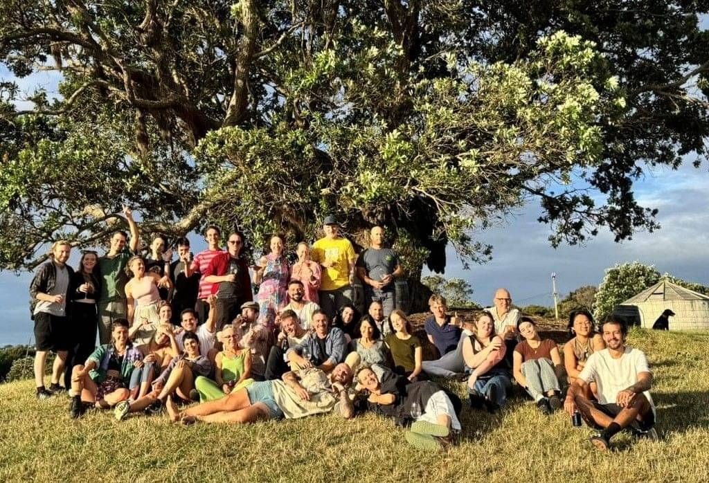

06 — Our Story
A Spanish Dream
A Spanish Dream
on Waiheke
What began as a love letter to Spanish culture has grown into one of New Zealand's most celebrated dining destinations. Our vineyard, our gardens, our kitchen — everything exists to honour the Spanish tradition of gathering around a table with people you love.
We don't just serve food and wine. We create a world — one where the warmth of Spain meets the beauty of Waiheke Island, and every guest becomes part of the story.
Read Our Story →